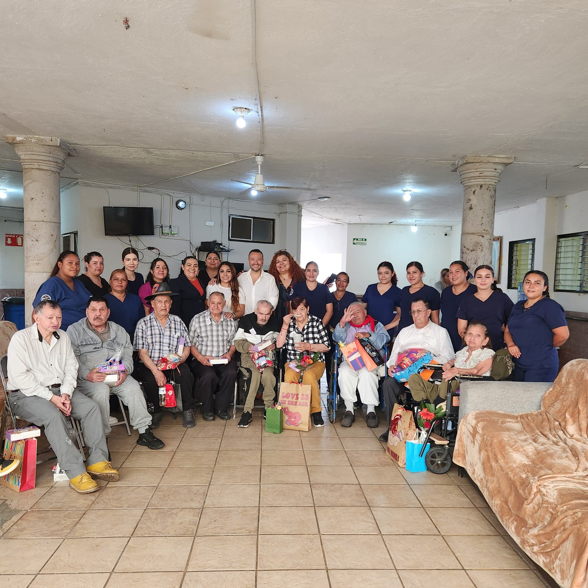
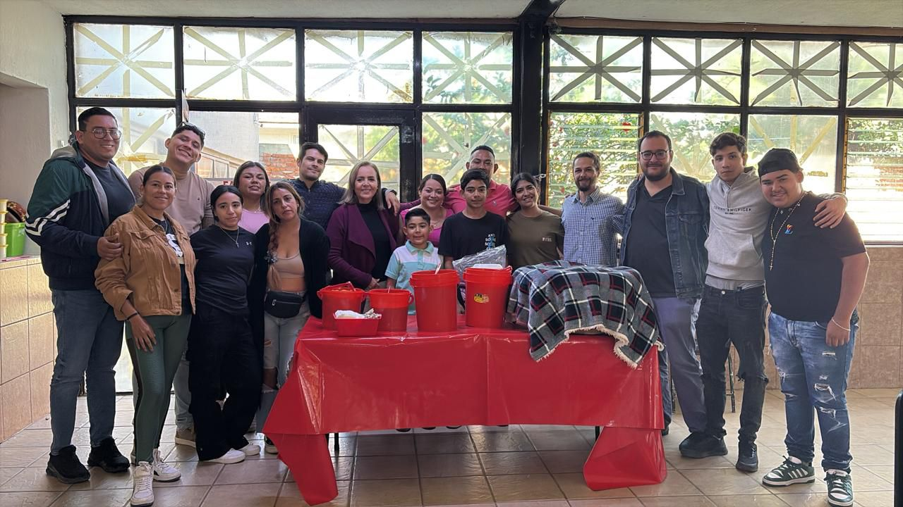
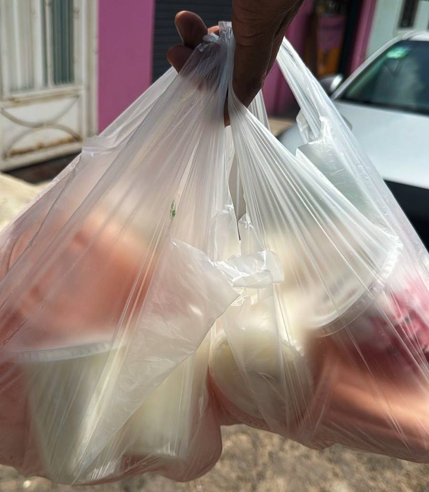

Somos una asociación sin fines de lucro dedicada a brindar cuidado, amor y atención integral a los adultos mayores, especialmente a aquellos que se encuentran en situación de vulnerabilidad.
Nuestro compromiso es ofrecerles un hogar digno donde se sientan valorados y acompañados.
🎯
Nuestra Misión
Brindar cuidado integral, dignidad y amor a los adultos mayores, especialmente a aquellos en situación de vulnerabilidad. Somos un espacio donde cada persona se siente valorada, acompañada y respaldada en todas sus necesidades físicas, emocionales y espirituales.
👁️
Nuestra Visión
Ser una institución reconocida por la excelencia en el cuidado de adultos mayores, un lugar referente de solidaridad, compasión y calidad. Aspiramos a transformar vidas a través del amor incondicional y contribuir a una sociedad donde nuestros abuelitos sean siempre respetados y honrados.
Nuestros Valores

Respeto, Amor, Honestidad, Transparencia y Solidaridad son los pilares que guían todas nuestras acciones.
Transparencia

En Hogares Fraternales de El Salto, creemos que la confianza se construye con honestidad y claridad. Por eso, mantenemos un compromiso firme con la transparencia en todas nuestras acciones, recursos y desiciones.
Cada donativo, apoyo o servicio recibido es utilizado de manera responsable para garantizar el bienestar, la atencion médica, la alimentacion y el cuidado digno de nuestros residentes.
Publicamos periódicamente los apoyos recibidos en nuestra pagina de facebook
¿Cómo Ayudar?

Tu apoyo puede marcar una gran diferencia en la vida de nuestros adultos mayores. En Hogares Fraternales de El Salto, cada gesto de generosidad se transforma en bienestar, compañia y esperanza. Existen muchas maneras de colaborar
Donaciones ecónomicas: Tu aporte noos ayuda a cubir gastos médicos, alimentación y mantenimiento de nuestras instalaciones.
Donaciones en especie: Agradecemos articulos de higiene personal, alimentos no perecederos, ropa limpia y en buen estado, entre otros.
Voluntariado: Si deseas regalar tu tiempo y cariño, unete como voluntario en actividades recreativas, acompañamiento o apoyo en tareas cotidianas.
Difunde nuestra causa: Compartir nuestra misión también es una forma de ayudar. Cuantas más personas nos conozcan, más corazones podremos tocar.
En este día, realizamos una salida recreativa, actividad que se enfoca en la salud mental y emocional de nuestros adultos mayores.
Visita Especial
Niños de la escuela local compartieron un día lleno de alegría con nuestros abuelitos.
Nuevo Programa de Salud
Iniciamos un programa de atención médica preventiva con especialistas voluntarios.
Voluntariado
si te gustaria apoyar a nuestros adultos mayores, ¡únete como voluntario!,toda ayuda nos beneficia y nos gustaria que tu nos apoyaras , si te interesea saber mas, ve al apartado de voluntariado ahi encontraras mas informacion